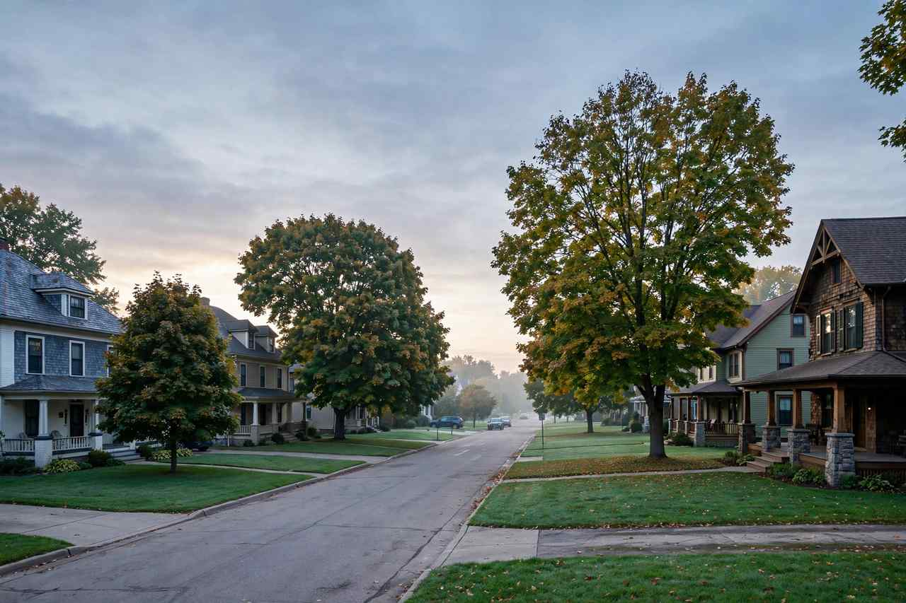

Rodent Control · Spirit Lake, IA
Same-Day Rodent Control in Spirit Lake, IA
If rodents have moved into your Spirit Lake home or business, Murvo can help today. Our local, licensed crews provide same-day inspection, targeted removal, durable exclusion, and cleanup, all under one flat-rate written quote with a written guarantee. No hourly billing and no surprise add-ons, just rodent specialists serving Spirit Lake and communities throughout Dickinson County every day of the week. Crews route daily across Dickinson County - 1 ZIP codes covered, including 51360.
24/7Availability
1ZIP codes covered
Same-dayResponse
Licensed · Upfront options · Written guarantees · Fully insured
Spirit Lake at a glance
Local Rodent Control for Spirit Lake, IA.
Dickinson County
Countynorthwest Iowa
RegionSioux City · 91 mi
Nearest metro148 miles northwest of Des Moines
From Des Moines1
ZIP codes covered Service by service in Spirit Lake
Rodent Control Services Available in Spirit Lake
The full range of residential and commercial rodent services in Spirit Lake and Dickinson County - built around the species and housing here, from emergency removal and same-day control to exclusion, proofing, trapping, cleanup, and damage repair. Every service below is quoted flat-rate in writing and backed by our workmanship guarantee.
- 01Rodent Control↗
- 02Rodent Inspection↗
- 03Rodent Removal↗
- 04Rodent Exclusion↗
- 05Rodent Proofing↗
- 06Rat Control↗
- 07Mice Control↗
- 08Mouse Removal↗
- 09Rat Removal↗
- 10Rodent Trapping↗
- 11Rodent Baiting↗
- 12Rodenticide Application↗
- 13Attic Rodent Removal↗
- 14Crawl Space Rodent Removal↗
- 15Wall Rodent Removal↗
- 16Kitchen Rodent Control↗
- 17Garage Rodent Control↗
- 18Commercial Rodent Control↗
- 19Residential Rodent Control↗
- 20Emergency Rodent Removal↗
- 21Same-Day Rodent Control↗
- 22Rodent Damage Repair↗
- 23Rodent Waste Cleanup↗
- 24Rodent Disinfection↗
- 25Rodent Odor Removal↗
- 26Dead Rodent Removal↗
- 27Rodent Dropping Cleanup↗
- 28Rodent Exclusion for Roofs↗
- 29Rodent Exclusion for Vents↗
- 30Rodent Exclusion for Chimneys↗
Rodent Control in Spirit Lake
Rodent Control in Spirit Lake
What does a finished job actually look like? No new droppings, no nighttime movement, and no open route back inside. That is the standard Murvo works toward in Spirit Lake, with background-checked technicians, a written workmanship guarantee, and follow-up checks that confirm the quiet is real rather than temporary luck.
Homeowners in Spirit Lake call Murvo for rodent control because the problem here is specific: Norway rat (Rattus norvegicus) pressure around vintage duplexes and stone homes, brick bungalows, older single-family homes, and farm and rural properties, tight access at basement foundations, alley-facing garage doors, sewer laterals, and gaps around utility lines and sills, and activity that follows the local season. Our Dickinson County crews diagnose the real source before recommending work, explain the options in plain language, and quote one flat rate in writing. Across Spirit Lake - including Okoboji, Orleans - every visit is backed by licensed, insured technicians and our written workmanship guarantee. In Spirit Lake, rodent control calls most often involve vintage duplexes and stone homes, brick bungalows, older single-family homes, and farm and rural properties, where basement foundations, alley-facing garage doors, sewer laterals, and gaps around utility lines and sills decide whether the fix holds.
Consider how a visit unfolds. The technician walks the exterior before touching anything indoors, noting gaps, rub marks, and food sources. Inside, attic and crawl-space evidence shapes the trapping plan, which is adjusted visit by visit as numbers change. Cleanup guidance covers contaminated areas safely, and exclusion work closes the route permanently. Throughout, photographs and written notes keep you informed, so progress is something you can see and verify rather than something you are asked to trust. Photographs taken at the start make those later comparisons honest, because memory alone tends to blur the details.
Getting started takes one conversation, day or night, because our lines stay open 24/7. We book a window that suits your household, confirm access needs in advance, and arrive prepared. Work proceeds only after your approval, in stages you can follow, and a final walkthrough reviews every seal and every monitoring result before sign-off. Questions after sign-off are welcome at any hour, and the same written record helps any technician pick up your case immediately.
In most of Spirit Lake, we can offer a same-day appointment for rodent control, and our lines are open 24/7 for urgent cases like scratching in the walls or a rodent in a living area. Your technician inspects first, explains the plan, and quotes a flat rate in writing before any work begins, so help starts fast without surprises. Murvo's Spirit Lake crews explain the finding either way, and the flat-rate quote leaves the decision with you.
The honest answer is that it depends on species, activity level, and how much sealing your home needs, which is why Murvo inspects first and then gives you a flat-rate quote in writing. For national context only, Angi's 2026 data averages rat and mouse removal and control at $396, typically $189 to $655; that is not a Murvo price, and your written quote is the figure you pay.
Rodent Inspection in Spirit Lake
Rodent Inspection in Spirit Lake
In Dickinson County, vintage duplexes and stone homes, brick bungalows, older single-family homes, and farm and rural properties often hide entry gaps that stay invisible from ground level: lifted shingles, unsealed pipe penetrations, and garage door corners where Norway rat (Rattus norvegicus) and House mouse (Mus musculus) slip through. A Murvo rodent inspection covers the roofline, foundation, attic, and crawl space in one visit, so you learn exactly where rodents get in and what closing each gap involves.
When you need rodent inspection in Spirit Lake, the job starts with what is actually happening in your part of Dickinson County. Murvo crews work Spirit Lake every week, so they know how Norway rat (Rattus norvegicus) and House mouse (Mus musculus) behave around vintage duplexes and stone homes, brick bungalows, older single-family homes, and farm and rural properties here - and where they get in: basement foundations, alley-facing garage doors, sewer laterals, and gaps around utility lines and sills. We arrive equipped for the full job, confirm the flat rate in writing before work begins, and cover the whole Spirit Lake area, including Okoboji, Orleans. No call-center runaround and no open-ended hourly billing - just a local crew, a clear plan, and a written quote you approve first. Seasonal timing matters for rodent inspection in Spirit Lake: rodents surge in Spirit Lake from October through April.
Think of the inspection as three passes. Each pass is photographed, and nothing is recommended without evidence from one of those passes to support it. The exterior pass checks siding, vents, pipe entries, and roof junctions for gaps and rub marks. The interior pass covers attic insulation, crawl-space corners, and kitchen voids for droppings, nests, and gnawing. The review pass brings it together: species, likely numbers, contamination, and the order in which fixes should happen. The report separates what rodents are doing now from what the structure merely allows them to do later.
Your part is simple: point out noises, droppings, and any past problems. Before leaving, you walk through the evidence together, discuss priorities, and decide what happens next, with no obligation attached. Ours is everything else. A background-checked technician arrives on time, protects access areas, and inspects inside and out against a set checklist. If you decide to proceed, those findings become the working plan, so no second survey is needed before approved repairs begin.
You do not have to wait days for answers in Spirit Lake. Same-day rodent inspection appointments are available in most areas, urgent calls are taken 24/7, and most home inspections take under an hour. You finish the visit with photos, written findings, and flat-rate pricing for anything we recommend. Murvo's Spirit Lake crews explain the finding either way, and the flat-rate quote leaves the decision with you.
Nationally, a professional rodent inspection typically runs $100 to $200 according to Angi's 2026 data, and it is often credited toward the job if you proceed. Murvo confirms your exact rodent inspection price before the visit and quotes any follow-up work as a flat rate in writing after inspection, so the figure you approve is the figure you pay, with no hourly billing.
Rodent Removal in Spirit Lake
Rodent Removal in Spirit Lake
In vintage duplexes and stone homes, brick bungalows, older single-family homes, and farm and rural properties, removal fails when it ignores how rodents actually live: close to food, water, and undisturbed cover near basement foundations, alley-facing garage doors, sewer laterals, and gaps around utility lines and sills. Our rodent removal in Dickinson County starts by mapping that daily pattern, then removes animals room by room, including attics and garages, until monitoring, not optimism, says the home is clear.
When you need rodent removal in Spirit Lake, the job starts with what is actually happening in your part of Dickinson County. Murvo crews work Spirit Lake every week, so they know how Norway rat (Rattus norvegicus) and House mouse (Mus musculus) behave around vintage duplexes and stone homes, brick bungalows, older single-family homes, and farm and rural properties here - and where they get in: basement foundations, alley-facing garage doors, sewer laterals, and gaps around utility lines and sills. We arrive equipped for the full job, confirm the flat rate in writing before work begins, and cover the whole Spirit Lake area, including Okoboji, Orleans. No call-center runaround and no open-ended hourly billing - just a local crew, a clear plan, and a written quote you approve first. Coverage for rodent removal spans 1 ZIP codes in Dickinson County, including 51360.
Removal starts with an assessment of species, numbers, and access routes across attics, wall voids, garages, and kitchens. Catch records show progress clearly instead of relying on guesswork. Removal is followed immediately by entry-point exclusion, because new rodents will replace removed ones through any gap left open, and disinfection is arranged after heavy activity. Once you approve the written quote, technicians set traps along proven runways, check them on schedule, and remove animals promptly and hygienically. Photos document each stage for you.
Once you book rodent removal in Spirit Lake, we agree a time window and your technician arrives with traps, protective equipment, and a clear plan. When catches reach zero, we walk through the results, discuss sealing, and confirm your written guarantee before closing the job. Progress is photographed and shared with you throughout the program. The first visit confirms activity and sets traps; return visits clear and reset them on schedule. Nothing is left unexplained.
For active infestations in Spirit Lake, rodent removal can usually start the same day you call, and our team answers 24/7 when a rodent is loose in a living area. The first visit confirms activity and sets traps straight away; return visits then clear and reset them until monitoring shows the property is completely clear. In Dickinson County, activity follows the local season, so timing the work matters as much as the method.
Cost depends on the species, how many animals are active, and how much sealing the home needs afterwards, so Murvo inspects first and quotes one flat rate in writing. For national context only, Angi's 2026 data averages rat and mouse removal at $396, typically $189 to $655. That benchmark is not a Murvo price; your written quote is the exact figure.
Rodent Exclusion in Spirit Lake
Rodent Exclusion in Spirit Lake
What makes sealing permanent rather than cosmetic? Material rodents cannot chew, fitted so weather cannot lift it. Murvo uses copper mesh, hardware cloth, and metal flashing where each belongs, installed by licensed and insured crews. Every finished seal is photographed, walked through with you, and covered by a written workmanship guarantee.
When you need rodent exclusion in Spirit Lake, the job starts with what is actually happening in your part of Dickinson County. Murvo crews work Spirit Lake every week, so they know how Norway rat (Rattus norvegicus) and House mouse (Mus musculus) behave around vintage duplexes and stone homes, brick bungalows, older single-family homes, and farm and rural properties here - and where they get in: basement foundations, alley-facing garage doors, sewer laterals, and gaps around utility lines and sills. We arrive equipped for the full job, confirm the flat rate in writing before work begins, and cover the whole Spirit Lake area, including Okoboji, Orleans. No call-center runaround and no open-ended hourly billing - just a local crew, a clear plan, and a written quote you approve first. Seasonal timing matters for rodent exclusion in Spirit Lake: rodents surge in Spirit Lake from October through April.
The sequence matters as much as the materials. A later monitoring check tests the work honestly, revisiting each sealed point for fresh rub marks, droppings, or gnawing. Active openings are closed first, inactive weaknesses next, and purely cosmetic gaps last, so protection arrives where pressure is highest. Photographs record every finished seal with its location, building a reference you keep. Because a properly sealed home needs far less ongoing treatment, exclusion also lowers long-term reliance on bait. The final monitoring visit therefore matters as much as the sealing day itself, and its findings are shared.
Before sealing day, confirm pets are secured and access to the roofline and foundation is clear. Afterwards you receive the photographs, the guarantee, and a date for the follow-up check that confirms everything is holding as intended. The crew then works through the agreed list, checks that no animals remain inside, and fits each seal cleanly. If monitoring ever finds fresh activity at a sealed point, that written inventory tells us exactly what to inspect first.
The first step is a survey, and in Spirit Lake we can often schedule that survey the same day you call about rodent exclusion. Sealing follows once active animals are cleared — nothing is ever sealed inside — and most homes are fully sealed within days, with entry points near wiring or food areas handled first. The written quote for your Spirit Lake property will spell out exactly which of these applies before any work starts.
For national context, Angi's 2026 data puts basic exclusion at $200 to $600, depending on access and the number of openings. That is a benchmark, not a Murvo price. After surveying your Spirit Lake home, we list every opening that needs sealing and quote one flat rate in writing, so you pay for the work your property actually needs and nothing more.
Rodent Proofing in Spirit Lake
Rodent Proofing in Spirit Lake
When is the right season for rodent proofing in Spirit Lake? Before cold weather sends rodents searching for indoor warmth, though any quiet month works well. Our licensed, insured technicians harden the structure, advise on food storage and vegetation, and leave a seasonal re-check booked, all backed by a written workmanship guarantee.
When you need rodent proofing in Spirit Lake, the job starts with what is actually happening in your part of Dickinson County. Murvo crews work Spirit Lake every week, so they know how Norway rat (Rattus norvegicus) and House mouse (Mus musculus) behave around vintage duplexes and stone homes, brick bungalows, older single-family homes, and farm and rural properties here - and where they get in: basement foundations, alley-facing garage doors, sewer laterals, and gaps around utility lines and sills. We arrive equipped for the full job, confirm the flat rate in writing before work begins, and cover the whole Spirit Lake area, including Okoboji, Orleans. No call-center runaround and no open-ended hourly billing - just a local crew, a clear plan, and a written quote you approve first. Homes near Milford tend to show activity first in Spirit Lake, which is why inspections start with basement foundations, alley-facing garage doors, sewer laterals, and gaps around utility lines and sills.
Proofing starts with a whole-property assessment inside and out, from overhanging branches and cluttered garages to unsealed vents and gaps under doors. We also address attractants: securing pet food and bird seed storage, trimming vegetation away from walls, and clearing harborage. Every item is prioritized so essential work happens first. The plan typically combines structural sealing of utility entries and foundation cracks with mesh screening on vents, chimneys, and rooflines, plus door sweeps where light shows underneath. Photos show each weakness we find.
Arrange a survey at a time that suits you; there is no emergency, so scheduling stays relaxed. Your technician walks every side of the property with you, photographs weak points, and talks through the plan in plain language. You then receive a written quote separating essential work from optional improvements, and nothing proceeds without your say-so. Staging the work is fine; essential sealing can proceed first while optional improvements wait until a season or budget that suits you better.
Rodent proofing is preventive, so there is rarely a rush, but surveys in Spirit Lake can often be arranged the same day you call, and always within a few days. Most proofing work is completed in a single visit once you approve the plan, and booking before colder weather gives your home protection ahead of the seasonal rush indoors. The written quote for your Spirit Lake property will spell out exactly which of these applies before any work starts.
We survey your Spirit Lake property first, separate the quick wins you can handle yourself from the specialist sealing, and quote the professional work as one flat rate in writing so spending can be staged. Angi's 2026 national context puts exclusion, the core of proofing, at $200 to $600 for basic work — a benchmark only, not a Murvo price.
Rat Control in Spirit Lake
Rat Control in Spirit Lake
Rat problems escalate quietly across Dickinson County: gnawed wiring, contaminated insulation, and droppings spreading through storage areas before anyone sees an animal. Murvo answers with same-day appointments where available and a 24/7 line for urgent cases. Every visit is documented, trapped rats are removed hygienically, and the program finishes with exclusion so the next group cannot simply move in.
In Spirit Lake, rat control is not a generic spray-and-go service. Rodents exploit basement foundations, alley-facing garage doors, sewer laterals, and gaps around utility lines and sills in vintage duplexes and stone homes, brick bungalows, older single-family homes, and farm and rural properties, and a fix that ignores those routes does not last. Murvo's Spirit Lake team inspects first, shows you the evidence - droppings, gnaw marks, entry gaps - and then lays out the work with a flat-rate written quote. We serve all of Dickinson County from Spirit Lake, including Okoboji, Orleans, and every job is covered by our written workmanship guarantee. Homes near Milford tend to show activity first in Spirit Lake, which is why inspections start with basement foundations, alley-facing garage doors, sewer laterals, and gaps around utility lines and sills.
Control starts with species and route identification, because roof rats and Norway rats behave and enter very differently. Technicians pre-bait unset traps along proven runways so wary rats feed confidently, then set them and return to check, clear, and adjust placements until activity stops. Trapped rats are removed hygienically, and each visit is documented with locations and counts. We then pair the program with roofline and entry-point exclusion, plus attic removal and cleanup where nests are found overhead. Progress is visible at every visit.
Call and describe where signs are strongest; that directs the first inspection. Your technician maps routes and harborage, explains the pre-baiting plan honestly, including why results build over days, and provides the written quote. Approval starts the program the same visit, with follow-up checks booked ahead so momentum never depends on you calling back. You will know after each visit what was caught, where placements changed, and what the next check is specifically looking for.
Call day or night — urgent rat control calls in Spirit Lake are answered 24/7, and a same-day inspection can usually start the program. Pre-baiting begins on that first visit once you approve the written quote, traps are set when rats are feeding confidently, and scheduled checks continue until activity stops. In Dickinson County, most cases involve the Norway rat (Rattus norvegicus) and the House mouse (Mus musculus), so the inspection focuses on their routes first.
Species, colony size, and the number of entry points to seal all affect rat work, which is why Murvo inspects first and quotes one flat rate in writing. Angi's 2026 figures, given for national context only, average rat control and removal at $396 and typically run $189 to $655; the written quote for your Spirit Lake home is the exact price.
Mice Control in Spirit Lake
Mice Control in Spirit Lake
In vintage duplexes and stone homes, brick bungalows, older single-family homes, and farm and rural properties, mice think small, and control has to think smaller. A gap at basement foundations, alley-facing garage doors, sewer laterals, and gaps around utility lines and sills no wider than a pencil is an open door, and pipe runs become private highways across Dickinson County homes. Our technicians hunt those overlooked routes for House mouse (Mus musculus) activity, then combine trapping, sealing, and food-storage advice.
When you need mice control in Spirit Lake, the job starts with what is actually happening in your part of Dickinson County. Murvo crews work Spirit Lake every week, so they know how Norway rat (Rattus norvegicus) and House mouse (Mus musculus) behave around vintage duplexes and stone homes, brick bungalows, older single-family homes, and farm and rural properties here - and where they get in: basement foundations, alley-facing garage doors, sewer laterals, and gaps around utility lines and sills. We arrive equipped for the full job, confirm the flat rate in writing before work begins, and cover the whole Spirit Lake area, including Okoboji, Orleans. No call-center runaround and no open-ended hourly billing - just a local crew, a clear plan, and a written quote you approve first. Homes near Milford tend to show activity first in Spirit Lake, which is why inspections start with basement foundations, alley-facing garage doors, sewer laterals, and gaps around utility lines and sills.
The program starts with an activity and entry-point survey covering kitchens, attics, wall voids, and under-floor spaces. Technicians return to clear and reset traps and track numbers until they reach zero. We then seal pencil-width gaps, including the overlooked routes behind baseboards and where pipes and wires pass through floors, and advise on cleaning scent-marked surfaces. Traps are placed in clusters along baseboards, behind appliances, and in attic voids, because mice travel the same short routes nightly. Follow-up monitoring confirms the result before sign-off.
Book mice control in Spirit Lake with one call, and same-day visits are available in many areas. Your technician surveys the kitchen, attic, and voids, explains where mice are traveling, and gives you a flat-rate written quote before setting a single trap. Trap checks are scheduled before we leave, and a follow-up visit confirms activity has stopped before the job is signed off. Everything is explained in plain language for your household.
Mice multiply fast, so mice control in Spirit Lake is built to start fast too: a survey can often be arranged the same day you call, with traps set on that first visit once the quote is approved. Because mice investigate new objects quickly, catches usually begin soon after, and check visits follow until a final confirmation shows activity has stopped. If you are seeing signs now, an inspection this week is the fastest way to know which situation you are in.
The number of rooms affected and the amount of sealing required set the price, so Murvo surveys first and quotes one flat rate in writing. For national context only, Angi's 2026 data averages rat and mouse control and removal at $396, typically $189 to $655 — not a Murvo price; your written quote is exact.
Mouse Removal in Spirit Lake
Mouse Removal in Spirit Lake
What does proper removal include beyond the traps themselves? Hygienic clearing of droppings and nesting, disinfection of affected cabinets, and sealing that stops the next mice using the same scent trails. Murvo delivers that complete finish with licensed, insured technicians and a written workmanship guarantee on the completed work.
Homeowners in Spirit Lake call Murvo for mouse removal because the problem here is specific: Norway rat (Rattus norvegicus) pressure around vintage duplexes and stone homes, brick bungalows, older single-family homes, and farm and rural properties, tight access at basement foundations, alley-facing garage doors, sewer laterals, and gaps around utility lines and sills, and activity that follows the local season. Our Dickinson County crews diagnose the real source before recommending work, explain the options in plain language, and quote one flat rate in writing. Across Spirit Lake - including Okoboji, Orleans - every visit is backed by licensed, insured technicians and our written workmanship guarantee. Around Milford, Superior, Terril, the pattern is similar: House mouse (Mus musculus) finds basement foundations, alley-facing garage doors, sewer laterals, and gaps around utility lines and sills first, and lasting mouse removal has to close those routes.
The survey comes first, and it is deliberately thorough. Traps are then set in multiples at proven points, because a single trap rarely reflects colony size. Returns are scheduled tightly: catches are cleared, traps reset, and numbers tracked until they fall to zero and stay there across a confirming check before sealing begins. Lofts, under-floor voids, cabinets, and the spaces behind kitchen units are checked for nests, droppings, and stored food caches. Photographs of nesting sites help here, because they reveal how far activity had spread before trapping began.
For urgent mouse problems in Spirit Lake, contact Murvo for a same-day response where available. Return visits are scheduled to clear and reset traps, and cleanup and sealing follow once catches reach zero. The final visit confirms the result and your written workmanship guarantee. Your technician surveys the home, explains the multi-trap plan, and confirms a flat-rate written quote before starting. You are updated after every visit, without ever chasing us.
In Spirit Lake, mouse removal can often begin the same day you call, especially where mice are active in kitchens or living areas. The first visit surveys nesting sites and sets traps immediately after you approve the quote; because mice investigate traps quickly, catches usually start fast, and return visits continue until numbers reach zero. In Dickinson County, most cases involve the Norway rat (Rattus norvegicus) and the House mouse (Mus musculus), so the inspection focuses on their routes first.
Rooms involved and sealing needed determine the cost of removal, so we survey first and agree a flat rate in writing before work begins. As national context only, Angi's 2026 data averages rat and mouse removal at $396, with a typical range of $189 to $655; that benchmark is not a Murvo price, and your written quote covers your exact program.
Rat Removal in Spirit Lake
Rat Removal in Spirit Lake
In vintage duplexes and stone homes, brick bungalows, older single-family homes, and farm and rural properties, where rats enter decides how removal unfolds. Roof-level access through basement foundations, alley-facing garage doors, sewer laterals, and gaps around utility lines and sills points toward attic work; ground burrows suggest basements and drains across Dickinson County. Our licensed technicians trace the whole route for Norway rat (Rattus norvegicus) and House mouse (Mus musculus), remove the colony, and sanitize areas where nests contaminated insulation or stored items.
When you need rat removal in Spirit Lake, the job starts with what is actually happening in your part of Dickinson County. Murvo crews work Spirit Lake every week, so they know how Norway rat (Rattus norvegicus) and House mouse (Mus musculus) behave around vintage duplexes and stone homes, brick bungalows, older single-family homes, and farm and rural properties here - and where they get in: basement foundations, alley-facing garage doors, sewer laterals, and gaps around utility lines and sills. We arrive equipped for the full job, confirm the flat rate in writing before work begins, and cover the whole Spirit Lake area, including Okoboji, Orleans. No call-center runaround and no open-ended hourly billing - just a local crew, a clear plan, and a written quote you approve first. Around Milford, Superior, Terril, the pattern is similar: House mouse (Mus musculus) finds basement foundations, alley-facing garage doors, sewer laterals, and gaps around utility lines and sills first, and lasting rat removal has to close those routes.
Removal stays trap-led and exclusion-backed throughout. After clearance, contaminated areas are sanitized carefully, with surfaces disinfected before cleaning and droppings never dry-swept. Monitoring devices and a documented final walkthrough then prove activity has ended, and proofing advice covers drains, vents, and rooflines going forward. Locked bait stations appear only where a site genuinely justifies them, positioned away from pets and food, labeled, and monitored on schedule; loose bait is never used. That written evidence stays with you, including the monitoring readings that supported the decision to sign off.
After booking, we confirm access needs for the attic, basement, or outbuildings so no time is wasted. On the first visit, your background-checked technician sets out the plan and begins pre-baiting once you approve the written quote. Follow-up visits run on schedule until catches stop, then sealing and sanitation are completed. A final monitoring period confirms the home is clear before sign-off. Progress is reported to you after every single visit.
In Spirit Lake, rat removal can usually start the same day you call, with 24/7 answering for rats active in living areas. Pre-baiting begins on the first visit after you approve the written quote, and traps are set once rats feed confidently, typically within days. Repeat visits then run frequently until monitoring confirms the colony is gone. Murvo's Spirit Lake crews explain the finding either way, and the flat-rate quote leaves the decision with you.
Colony size, access, and the sealing needed afterwards drive the price, so Murvo assesses the property first and quotes a flat rate in writing covering the full program. Angi's 2026 data, for national context only, averages rat removal at $396 and typically ranges from $189 to $655; that is a benchmark, not a Murvo price.
Rodent Trapping in Spirit Lake
Rodent Trapping in Spirit Lake
For Spirit Lake households who want a poison-free route, trapping delivers measurable results without chemicals in the home. Each catch is recorded by location, building a picture of movement through vintage duplexes and stone homes, brick bungalows, older single-family homes, and farm and rural properties via basement foundations, alley-facing garage doors, sewer laterals, and gaps around utility lines and sills until numbers fall to zero. Murvo's licensed, insured technicians then recommend exclusion sealing and cleanup, and the whole program is backed by a written workmanship guarantee.
Homeowners in Spirit Lake call Murvo for rodent trapping because the problem here is specific: Norway rat (Rattus norvegicus) pressure around vintage duplexes and stone homes, brick bungalows, older single-family homes, and farm and rural properties, tight access at basement foundations, alley-facing garage doors, sewer laterals, and gaps around utility lines and sills, and activity that follows the local season. Our Dickinson County crews diagnose the real source before recommending work, explain the options in plain language, and quote one flat rate in writing. Across Spirit Lake - including Okoboji, Orleans - every visit is backed by licensed, insured technicians and our written workmanship guarantee. Around Milford, Superior, Terril, the pattern is similar: House mouse (Mus musculus) finds basement foundations, alley-facing garage doors, sewer laterals, and gaps around utility lines and sills first, and lasting rodent trapping has to close those routes.
Adjustment is where experience shows. As numbers fall toward zero, attention shifts to exclusion recommendations and cleanup, converting a trapping program into lasting protection. If catches cluster at one end of a runway, placements concentrate there; if a route goes quiet while another warms up, devices move accordingly. Baits are refreshed and matched to what the species is already eating nearby. Households receive a simple map of device locations and safety guidance for children and pets. Households can follow that adjustment process through the shared catch log, which records every change of position.
Call to book, and a first visit can often happen the same day. Nothing proceeds without approval. Scheduled returns then clear, reset, and record catches, sharing the running total with you at every single visit. That visit maps activity, places or pre-baits devices, and produces your written quote for the full program including checks. Catch records are never an afterthought; they are the evidence that decides when trapping ends and monitoring alone takes over.
In Spirit Lake, a rodent trapping program can usually start the same day you call, with traps placed or pre-baiting begun on the first visit after you approve the quote. Mice often investigate within the first night, while wary rats need a few days of pre-baiting before traps are set. Scheduled checks then keep the program moving until numbers reach zero. The written quote for your Spirit Lake property will spell out exactly which of these applies before any work starts.
Trapping is usually quoted as part of a complete removal program rather than by the trap, and the price depends on species, activity level, and how many check visits are needed. Murvo inspects first and quotes one flat rate in writing covering the program and its check visits, so there are no per-visit surprises and no hourly billing at any stage.
Rodent Baiting in Spirit Lake
Rodent Baiting in Spirit Lake
What rules govern bait near children, pets, and wildlife in Iowa? Strict ones, and Murvo follows them plainly. State rules restrict anticoagulant rodenticides, and Murvo applies the same care everywhere: no loose bait, no open trays, no unmonitored stations. Before placement, you review locations, risks, and alternatives with a licensed technician.
Homeowners in Spirit Lake call Murvo for rodent baiting because the problem here is specific: Norway rat (Rattus norvegicus) pressure around vintage duplexes and stone homes, brick bungalows, older single-family homes, and farm and rural properties, tight access at basement foundations, alley-facing garage doors, sewer laterals, and gaps around utility lines and sills, and activity that follows the local season. Our Dickinson County crews diagnose the real source before recommending work, explain the options in plain language, and quote one flat rate in writing. Across Spirit Lake - including Okoboji, Orleans - every visit is backed by licensed, insured technicians and our written workmanship guarantee. In Spirit Lake, rodent baiting calls most often involve vintage duplexes and stone homes, brick bungalows, older single-family homes, and farm and rural properties, where basement foundations, alley-facing garage doors, sewer laterals, and gaps around utility lines and sills decide whether the fix holds.
Where baiting is not appropriate indoors, we say so, and recommend trapping first followed by proofing of gaps around pipes, vents, and doors. That exclusion-first approach reduces reliance on bait over time, which matters for households with children, pets, or visiting wildlife in Spirit Lake. Consumption records from each visit show whether activity is falling, holding, or moving, guiding whether stations stay, move, or come out entirely in favor of sealing and trapping alone. You receive those records after every monitoring visit.
After booking, we confirm a time window and talk through where pets play and children gather, so placement planning starts before we arrive. Follow-up checks are booked ahead, consumption is reported to you, and the program ends with stations removed and sealing recommendations confirmed. On the day, your background-checked technician inspects first, agrees each station location with you, and secures and labels every unit. Nothing is placed anywhere you have not approved.
In Spirit Lake, rodent baiting starts with an inspection visit we can often arrange the same day you call. Stations are only placed after activity is mapped and you approve the written quote and each location, so setup is deliberate rather than rushed. Monitoring visits then run on a fixed schedule until consumption stops and activity is confirmed clear. In Dickinson County, activity follows the local season, so timing the work matters as much as the method.
How many locked stations your property needs and how long monitoring runs determine the cost, so Murvo inspects and maps activity first, then quotes one flat rate in writing covering placement and scheduled checks. There are no per-visit surprises, and because the approach is exclusion-first, the aim is to reduce and eventually remove stations rather than maintain them forever.
Rodenticide Application in Spirit Lake
Rodenticide Application in Spirit Lake
Rodenticides are powerful products that can harm pets, children, and wildlife if misused, so Murvo treats rodenticide application in Spirit Lake as a last resort, never a first step. Products are placed only inside tamper-resistant locked stations, never as loose pellets or open trays, and only after inspection confirms trapping and exclusion alone will not solve the problem.
In Spirit Lake, rodenticide application is not a generic spray-and-go service. Rodents exploit basement foundations, alley-facing garage doors, sewer laterals, and gaps around utility lines and sills in vintage duplexes and stone homes, brick bungalows, older single-family homes, and farm and rural properties, and a fix that ignores those routes does not last. Murvo's Spirit Lake team inspects first, shows you the evidence - droppings, gnaw marks, entry gaps - and then lays out the work with a flat-rate written quote. We serve all of Dickinson County from Spirit Lake, including Okoboji, Orleans, and every job is covered by our written workmanship guarantee. Seasonal timing matters for rodenticide application in Spirit Lake: rodents surge in Spirit Lake from October through April.
Application begins with a thorough inspection to confirm species and activity levels and to decide whether rodenticide is needed at all; often, professional trapping plus controlled outdoor baiting is enough, and if trapping alone can solve your problem safely, that is the route we recommend first. When treatment is justified, we follow Inspect, Remove, Exclude, Clean, and Monitor: stations are mapped, labeled, anchored, and checked on schedule, with amounts recorded at every visit. Products stay inside locked stations at all times.
Start with the inspection, often bookable the same day, and expect alternatives explained before products are discussed. Your licensed technician confirms whether treatment is justified, reviews safety information with you, and provides the written quote. Application happens only after approval, with monitoring visits scheduled and a clear stopping point agreed in advance. You can pause or stop the program at any point, and stopping triggers removal of stations rather than leaving them behind unattended.
In Spirit Lake, rodenticide application begins with an inspection we can often schedule the same day you call, because no responsible application happens without one. If treatment is justified and you approve the written quote, locked stations are installed on that visit. Monitoring then runs on schedule, and treatment stops as soon as data shows activity has ended. In Dickinson County, activity follows the local season, so timing the work matters as much as the method.
Station numbers, the product permitted under Iowa rules, and the length of monitoring all shape the price. Murvo inspects first, explains whether trapping or exclusion could avoid chemical control entirely, and then quotes one flat rate in writing before work begins. That quote covers scheduled monitoring visits, so there are no per-visit surprises later.
Attic Rodent Removal in Spirit Lake
Attic Rodent Removal in Spirit Lake
Attics offer rodents warmth, quiet nesting material, and insulation to contaminate, and in vintage duplexes and stone homes, brick bungalows, older single-family homes, and farm and rural properties across Spirit Lake they are reached through basement foundations, alley-facing garage doors, sewer laterals, and gaps around utility lines and sills long before anyone notices. Our technicians photograph what they find inside, check for young, nests, and secondary entry points in adjoining crawl spaces, and clear the space before arranging cleanup and disinfection where contamination is present.
Homeowners in Spirit Lake call Murvo for attic rodent removal because the problem here is specific: Norway rat (Rattus norvegicus) pressure around vintage duplexes and stone homes, brick bungalows, older single-family homes, and farm and rural properties, tight access at basement foundations, alley-facing garage doors, sewer laterals, and gaps around utility lines and sills, and activity that follows the local season. Our Dickinson County crews diagnose the real source before recommending work, explain the options in plain language, and quote one flat rate in writing. Across Spirit Lake - including Okoboji, Orleans - every visit is backed by licensed, insured technicians and our written workmanship guarantee. Homes near Milford tend to show activity first in Spirit Lake, which is why inspections start with basement foundations, alley-facing garage doors, sewer laterals, and gaps around utility lines and sills.
Attic work follows Inspect, Remove, Exclude, Clean, and Monitor. Targeted, humane trapping is then set in the attic to clear active animals quickly, with checks on schedule. Once clear, roofline entry points are sealed with metal mesh and flashing as part of wider proofing, and dropping cleanup and disinfection are arranged where insulation is contaminated. A detailed inspection covers the attic, roof, and eaves, identifying species, nests, droppings, and gnawed cables. Monitoring traps stay briefly after sealing to confirm the attic is empty and quiet.
After booking, we confirm safe attic access and any pets or stored items to work around. On arrival, your background-checked technician inspects, explains the plan in plain language, and starts trapping once you approve the written quote. Follow-up visits are booked ahead to clear traps and complete sealing. A final monitoring check and walkthrough confirm the result before we close the job. Insulation and wiring findings are reported to you too.
Overhead scratching in Spirit Lake often gets a same-day attic rodent removal visit, and attics with chewed wiring are prioritized because of the fire risk. Trapping starts on the first visit once you approve the written quote, checks run on schedule, and most attics are cleared and sealed within days. Monitoring stays in place briefly afterwards to confirm nothing remains inside. In Dickinson County, most cases involve the Norway rat (Rattus norvegicus) and the House mouse (Mus musculus), so the inspection focuses on their routes first.
Attic costs depend on how many animals are active, how much sealing the roofline needs, and whether contaminated insulation requires cleanup, so Murvo inspects first and quotes one flat rate in writing. That quote covers the removal program described, with cleanup options priced separately in writing before you decide, so there are no surprises once work is underway.
Crawl Space Rodent Removal in Spirit Lake
Crawl Space Rodent Removal in Spirit Lake
Murvo favors trapping and physical exclusion under Spirit Lake homes over poison, an approach that protects pets that may access the crawl space and avoids carcasses hidden where they cannot be reached. Licensed, insured technicians document every sealed opening with photographs, refit access panels securely, and back the finished work with our written workmanship guarantee and monitoring checks.
Homeowners in Spirit Lake call Murvo for crawl space rodent removal because the problem here is specific: Norway rat (Rattus norvegicus) pressure around vintage duplexes and stone homes, brick bungalows, older single-family homes, and farm and rural properties, tight access at basement foundations, alley-facing garage doors, sewer laterals, and gaps around utility lines and sills, and activity that follows the local season. Our Dickinson County crews diagnose the real source before recommending work, explain the options in plain language, and quote one flat rate in writing. Across Spirit Lake - including Okoboji, Orleans - every visit is backed by licensed, insured technicians and our written workmanship guarantee. In Spirit Lake, crawl space rodent removal calls most often involve vintage duplexes and stone homes, brick bungalows, older single-family homes, and farm and rural properties, where basement foundations, alley-facing garage doors, sewer laterals, and gaps around utility lines and sills decide whether the fix holds.
The sequence is Inspect, Remove, Exclude, Clean, and Monitor. Targeted trapping then removes active rats and mice below the house, with checks on schedule. After clearance, vent exclusion with sturdy mesh and sealing of pier and plumbing gaps close the space, and waste cleanup removes droppings and nesting material. A full under-home inspection with photo documentation establishes species, nesting areas, and damage to vapor barrier and pipe insulation. Monitoring checks confirm activity has ended before we close the job properly.
Schedule an under-home inspection, usually within days and sooner when odors reach living areas. Your technician photographs conditions below, explains findings in plain language, and confirms the written quote before any trapping. Clearance, vent screening, and cleanup then follow in sequence, with monitoring left in place until the space below is confirmed quiet. Photographs from below the home accompany the final paperwork, which is especially useful because few homeowners ever see that space themselves.
For crawl space rodent removal in Spirit Lake, inspections are usually arranged within a few days — and sooner when odors are drifting into living areas or activity sounds heavy. Trapping begins on the first visit after you approve the written quote, clearance and sealing follow in sequence, and monitoring stays in place until the space below is confirmed quiet. That is also why Murvo pairs removal with exclusion in Spirit Lake - treating the animal without closing basement foundations, alley-facing garage doors, sewer laterals, and gaps around utility lines and sills rarely lasts.
Crawl-space costs depend on access, how many vents and gaps need sealing, and whether waste cleanup is required, so Murvo inspects first and quotes one flat rate in writing. If extra vents need sealing within the agreed scope, there are no surprises, and cleanup options are priced in writing before you decide whether to include them.
Wall Rodent Removal in Spirit Lake
Wall Rodent Removal in Spirit Lake
Wall voids are hidden highways through vintage duplexes and stone homes, brick bungalows, older single-family homes, and farm and rural properties in Spirit Lake: mice travel them between kitchens and attics, and rats use them to reach food unseen via basement foundations, alley-facing garage doors, sewer laterals, and gaps around utility lines and sills. Our technicians carry inspection cameras for accessible voids, helping locate nests without opening large sections of drywall. If an animal has already died in the wall, retrieval and sanitation are handled too.
When you need wall rodent removal in Spirit Lake, the job starts with what is actually happening in your part of Dickinson County. Murvo crews work Spirit Lake every week, so they know how Norway rat (Rattus norvegicus) and House mouse (Mus musculus) behave around vintage duplexes and stone homes, brick bungalows, older single-family homes, and farm and rural properties here - and where they get in: basement foundations, alley-facing garage doors, sewer laterals, and gaps around utility lines and sills. We arrive equipped for the full job, confirm the flat rate in writing before work begins, and cover the whole Spirit Lake area, including Okoboji, Orleans. No call-center runaround and no open-ended hourly billing - just a local crew, a clear plan, and a written quote you approve first. Coverage for wall rodent removal spans 1 ZIP codes in Dickinson County, including 51360.
Once the void is clear, we apply proofing to wall entry routes, sealing baseboard and pipe gaps linked to kitchen activity so the route cannot reopen. If a rodent has died in the wall, retrieval is followed by sanitation: contaminated material is never dry-swept, surfaces are disinfected first following CDC guidance, and odor treatment is applied so other rodents are not attracted back. Monitoring at key access points then confirms the void stays quiet. Connected voids are checked before we finish.
Book wall rodent removal in Spirit Lake and we will schedule a locating visit, often the same day for loud or persistent wall noise. Trapping and any agreed access follow, then sealing, sanitation, and monitoring complete the job. Your technician traces the activity, explains exactly where the animal is traveling, and confirms a flat-rate written quote before any access work, so wall work never becomes an open-ended bill. Your written guarantee covers the completed work.
In Spirit Lake, wall rodent removal locating visits are often available the same day you call, especially for persistent scratching keeping you awake. Trapping is set at access points on that first visit once you approve the written quote, and because rodents travel the void nightly, results usually follow within days, confirmed by quiet-wall checks before we sign off. A Spirit Lake inspection confirms it on site - dropping size, gnaw marks, and entry points tell the story quickly.
How precisely the activity can be located, and whether a minimal access cut turns out to be needed, decide the price of wall work. Murvo therefore locates the activity first and quotes a flat rate in writing, covering the trapping, sealing, and monitoring in your plan, so wall access never becomes an open-ended bill.
Kitchen Rodent Control in Spirit Lake
Kitchen Rodent Control in Spirit Lake
Behind the stove is where the trouble usually hides. Warmth, crumbs and a drip under the sink draw Norway rat (Rattus norvegicus) and House mouse (Mus musculus) night after night in Spirit Lake kitchens. Murvo clears the activity, blocks the gaps they travel through, and gives you a flat-rate written quote before any work begins at your home.
When you need kitchen rodent control in Spirit Lake, the job starts with what is actually happening in your part of Dickinson County. Murvo crews work Spirit Lake every week, so they know how Norway rat (Rattus norvegicus) and House mouse (Mus musculus) behave around vintage duplexes and stone homes, brick bungalows, older single-family homes, and farm and rural properties here - and where they get in: basement foundations, alley-facing garage doors, sewer laterals, and gaps around utility lines and sills. We arrive equipped for the full job, confirm the flat rate in writing before work begins, and cover the whole Spirit Lake area, including Okoboji, Orleans. No call-center runaround and no open-ended hourly billing - just a local crew, a clear plan, and a written quote you approve first. The Spirit Lake crews who handle kitchen rodent control also handle the follow-through - proofing, cleanup, and monitoring - so one visit can close the whole problem.
Cupboard hinges, kick plates and pipe collars often reveal more than the room itself. We examine those details first, then work outward into adjoining voids and the basement or garage beyond. Removal stays targeted and discreet. Afterward, sealing closes the routes we documented, surfaces touched by droppings receive proper cleaning, and we walk through small habits that help: lids sealed, spills wiped from hidden edges, and pet food lifted overnight. Monitoring points stay in place until repeat visits show the kitchen has gone quiet.
Booking takes one call. Traps are set discreetly, entry gaps sealed and food areas cleaned down. We return to check traps and monitoring points, adjust placement if needed, and confirm the kitchen is clear. Every stage is covered by our written workmanship guarantee. Your technician arrives as arranged, confirms where rodents are feeding and traveling, and talks you through a clear plan with one written flat-rate price. Nothing starts until you have approved the written quote.
You can reach us by phone 24/7, and reports of droppings close to food preparation surfaces are given priority when we schedule. A same-day visit in Spirit Lake may be possible in many cases, depending on technician availability. When you call, tell us what you found and we will offer the earliest appointment available. Around Spirit Lake, vintage duplexes and stone homes, brick bungalows, older single-family homes, and farm and rural properties give rodents the most cover, which is why entry points get checked before traps are set.
Cost depends on how many rodents are active, where they are entering, and how much sealing and cleanup the kitchen needs. Murvo inspects first, then gives one flat-rate written quote covering trapping, sealing and follow-up monitoring, with no hourly billing or add-on surprises. You approve the full price before any work begins, and the quote is backed by our written workmanship guarantee.
Garage Rodent Control in Spirit Lake
Garage Rodent Control in Spirit Lake
In Dickinson County garages often connect straight into kitchens, utility rooms and wall voids. Our garage rodent control tackles the garage as the front door it really is: thorough inspection, humane removal where possible, durable sealing, and practical storage advice that keeps rodents from settling in again. Help is available around the clock, every day.
In Spirit Lake, garage rodent control is not a generic spray-and-go service. Rodents exploit basement foundations, alley-facing garage doors, sewer laterals, and gaps around utility lines and sills in vintage duplexes and stone homes, brick bungalows, older single-family homes, and farm and rural properties, and a fix that ignores those routes does not last. Murvo's Spirit Lake team inspects first, shows you the evidence - droppings, gnaw marks, entry gaps - and then lays out the work with a flat-rate written quote. We serve all of Dickinson County from Spirit Lake, including Okoboji, Orleans, and every job is covered by our written workmanship guarantee. In Spirit Lake, garage rodent control calls most often involve vintage duplexes and stone homes, brick bungalows, older single-family homes, and farm and rural properties, where basement foundations, alley-facing garage doors, sewer laterals, and gaps around utility lines and sills decide whether the fix holds.
The garage process pairs removal with long-term proofing. Technicians remove rodents and nests, disinfect contaminated areas where needed, and seal the gaps mice and rats squeeze through, remembering mice need only a very small opening. We check vehicle wiring and stored soft furnishings for gnaw damage, recommend sealed containers instead of cardboard, and set monitoring points to verify the space stays clear. The aim is a garage that no longer shelters rodents or feeds them into your home. Safety of occupants and pets guides every method chosen.
Booking is one call. Follow-up visits check activity levels and adjust the plan if rodents are still moving. When monitoring shows the garage is clear, we close the job, with the guarantee in writing. On arrival we inspect first, explain what we found in plain language, and give one written flat-rate price for the whole plan. Traps are set, entry points sealed and contaminated material dealt with safely. Questions are answered honestly throughout, with findings in writing.
We answer calls 24/7 and treat garages with active nesting, chewed wiring or rodents moving into the house as urgent. Same-day appointments in Spirit Lake are often available, depending on technician schedules. Call with a description of the signs you have seen and we will offer you the earliest visit we can. That is also why Murvo pairs removal with exclusion in Spirit Lake - treating the animal without closing basement foundations, alley-facing garage doors, sewer laterals, and gaps around utility lines and sills rarely lasts.
Pricing depends on garage size, how established the infestation is, and how much proofing the doors and walls need. Murvo inspects first and quotes one flat rate in writing, covering trapping, nest removal, sealing and monitoring, with no hourly charges. Nothing starts until you approve that price, and the completed work is backed by our written workmanship guarantee.
Commercial Rodent Control in Spirit Lake
Commercial Rodent Control in Spirit Lake
One rodent sighting can close a restaurant, fail a food-safety audit or destroy stock in a warehouse. Our commercial rodent control in Spirit Lake protects restaurants, warehouses and commercial sites with discreet service, monitored trapping, durable exclusion and audit-ready documentation that keeps inspectors and auditors satisfied. Licensed and insured, Murvo backs every job with a written workmanship guarantee.
Homeowners in Spirit Lake call Murvo for commercial rodent control because the problem here is specific: Norway rat (Rattus norvegicus) pressure around vintage duplexes and stone homes, brick bungalows, older single-family homes, and farm and rural properties, tight access at basement foundations, alley-facing garage doors, sewer laterals, and gaps around utility lines and sills, and activity that follows the local season. Our Dickinson County crews diagnose the real source before recommending work, explain the options in plain language, and quote one flat rate in writing. Across Spirit Lake - including Okoboji, Orleans - every visit is backed by licensed, insured technicians and our written workmanship guarantee. The Spirit Lake crews who handle commercial rodent control also handle the follow-through - proofing, cleanup, and monitoring - so one visit can close the whole problem.
Your program begins away from the shop floor, in the places rodents prefer: docks, plant rooms, bin stores, ceiling voids and delivery entrances. Monitored traps are positioned discreetly, outdoor stations stay locked, and product use is logged in full. Exclusion targets dock seals, vents and service gaps. We map activity there first, then connect it to sightings inside. After each visit you receive a clear report covering findings, actions and trends, written so a restaurant manager or warehouse operator can hand it straight to an auditor.
Reach out and we will arrange a survey at a time that does not disrupt trading. The surveyor walks the whole site, notes risks by area, and sends a written proposal before any work starts. Once approved, initial removal and sealing begin discreetly, with a report after every visit for your compliance file. Scheduled checks continue from there, reviews track the trend, and urgent sightings can be reported by phone at any hour, day or night.
Commercial calls are taken 24/7, and a live sighting during trading is handled as an emergency with discretion to protect customers and reputation. The visit we can offer in Spirit Lake depends on technician availability, and we will always give you the earliest one possible. We can also advise on immediate steps to protect stock and your audit position while you wait. Around Spirit Lake, vintage duplexes and stone homes, brick bungalows, older single-family homes, and farm and rural properties give rodents the most cover, which is why entry points get checked before traps are set.
For wider context, Angi's 2026 figures put rat extermination at $189-$655, averaging $396 nationally, though commercial sites are scoped individually and those figures are not Murvo prices. Site size, sector, activity and the exclusion and monitoring required all shape the cost. Murvo surveys first, then quotes a flat rate in writing for initial work or a clear scheduled-service price for an ongoing program, with reports included for your audit file.
Residential Rodent Control in Spirit Lake
Residential Rodent Control in Spirit Lake
For families in vintage duplexes and stone homes, brick bungalows, older single-family homes, and farm and rural properties, the worry is understandable: droppings near food, noises at night, children and pets underfoot. Our residential rodent control in Spirit Lake uses careful, pet-conscious methods, explains each step plainly, and keeps loose poison out of indoor areas. Licensed, insured technicians handle the visit from first inspection through final monitoring check.
In Spirit Lake, residential rodent control is not a generic spray-and-go service. Rodents exploit basement foundations, alley-facing garage doors, sewer laterals, and gaps around utility lines and sills in vintage duplexes and stone homes, brick bungalows, older single-family homes, and farm and rural properties, and a fix that ignores those routes does not last. Murvo's Spirit Lake team inspects first, shows you the evidence - droppings, gnaw marks, entry gaps - and then lays out the work with a flat-rate written quote. We serve all of Dickinson County from Spirit Lake, including Okoboji, Orleans, and every job is covered by our written workmanship guarantee. The Spirit Lake crews who handle residential rodent control also handle the follow-through - proofing, cleanup, and monitoring - so one visit can close the whole problem.
Instead of treating one room and hoping, we follow the connections: roof to wall void, garage to kitchen, crawl space to pipework. Traps go on active lines, entry points get sealed once animals are out, and any soiled material is removed with proper cleaning. We note weak spots outside too, like overhanging branches or gaps under doors. That route map shapes everything that follows. Monitoring continues after the main work, because quiet for a week means little unless repeat checks confirm it over time.
The first call covers access, attic entry and any areas you want kept undisturbed. On site, inspection comes before pricing, so the written quote reflects your home rather than a guess. Approved work then clears the animals, proofs the openings and cleans contaminated spots. Follow-up visits verify the result and catch any late activity early. If something returns under the terms explained in writing, we will discuss the next step with you honestly and promptly.
You can call us 24/7, and homes where rodents are in living areas, kitchens or children's bedrooms are prioritized in scheduling. A same-day visit in Spirit Lake is often possible, subject to technician availability. Share what you have seen or heard and we will offer the earliest appointment available, plus advice for the meantime. Around Spirit Lake, vintage duplexes and stone homes, brick bungalows, older single-family homes, and farm and rural properties give rodents the most cover, which is why entry points get checked before traps are set.
Cost depends on the species, how established the infestation is, and how much exclusion and cleanup your home needs. Murvo inspects first, then quotes one flat rate in writing covering removal, sealing, cleaning and monitoring, with no hourly charges or add-on surprises. You approve the price before work begins, and everything is backed by our written workmanship guarantee.
Emergency Rodent Removal in Spirit Lake
Emergency Rodent Removal in Spirit Lake
Panic is a normal reaction to a rat in the kitchen. Take a breath, keep people and pets back, and call us. In Spirit Lake, our emergency team assesses the risk first, removes the animal, checks for others nearby, and secures the opening it used, so one frightening night does not become a longer problem.
Homeowners in Spirit Lake call Murvo for emergency rodent removal because the problem here is specific: Norway rat (Rattus norvegicus) pressure around vintage duplexes and stone homes, brick bungalows, older single-family homes, and farm and rural properties, tight access at basement foundations, alley-facing garage doors, sewer laterals, and gaps around utility lines and sills, and activity that follows the local season. Our Dickinson County crews diagnose the real source before recommending work, explain the options in plain language, and quote one flat rate in writing. Across Spirit Lake - including Okoboji, Orleans - every visit is backed by licensed, insured technicians and our written workmanship guarantee. In Spirit Lake, emergency rodent removal calls most often involve vintage duplexes and stone homes, brick bungalows, older single-family homes, and farm and rural properties, where basement foundations, alley-facing garage doors, sewer laterals, and gaps around utility lines and sills decide whether the fix holds.
Calls get sorted by risk before a technician is dispatched: an animal in a bedroom, contamination near food, or damage to wiring moves to the front. On site, the affected area is made safe, then the rodent is located and removed using methods suited to that spot. Connected voids get checked for droppings, nesting or further movement. Openings are secured where possible during the same visit, contaminated surfaces are cleaned, and monitoring is placed so any remaining activity shows up quickly instead of surprising you again later.
Call any time, day or night, and describe what is happening. Follow-up visits confirm the home is clear, under our written workmanship guarantee. We agree the earliest visit available and any steps to keep people and pets safe meanwhile. On arrival the technician inspects, quotes one flat rate in writing, and starts once you approve. Removal and securing come first, then disinfection and monitoring. You stay informed at every stage of the work.
Our lines are open 24/7, every day, and emergency calls in Spirit Lake are triaged by risk, with live rodents in living areas, food contamination and chewed wiring prioritized. We will offer the earliest visit our technicians can reach and talk you through simple steps to keep everyone safe until we arrive. That is also why Murvo pairs removal with exclusion in Spirit Lake - treating the animal without closing basement foundations, alley-facing garage doors, sewer laterals, and gaps around utility lines and sills rarely lasts.
For national context, Angi's 2026 data puts rat extermination at $189-$655, averaging $396, though emergency work is not priced from those figures and they are not Murvo prices. Location, numbers involved and the securing, cleanup or follow-up needed set the scope. On arrival Murvo inspects and quotes one flat rate in writing, with no hourly billing even on urgent jobs, and nothing starts until you approve it.
Same-Day Rodent Control in Spirit Lake
Same-Day Rodent Control in Spirit Lake
Waiting lets a small problem grow litters. If Norway rat (Rattus norvegicus) or House mouse (Mus musculus) showed up this morning in your Spirit Lake home or business, acting now limits damage and contamination. We will offer the earliest appointment available, start removal where activity is confirmed, and book the proofing and monitoring that make the result last beyond today.
In Spirit Lake, same-day rodent control is not a generic spray-and-go service. Rodents exploit basement foundations, alley-facing garage doors, sewer laterals, and gaps around utility lines and sills in vintage duplexes and stone homes, brick bungalows, older single-family homes, and farm and rural properties, and a fix that ignores those routes does not last. Murvo's Spirit Lake team inspects first, shows you the evidence - droppings, gnaw marks, entry gaps - and then lays out the work with a flat-rate written quote. We serve all of Dickinson County from Spirit Lake, including Okoboji, Orleans, and every job is covered by our written workmanship guarantee. The Spirit Lake crews who handle same-day rodent control also handle the follow-through - proofing, cleanup, and monitoring - so one visit can close the whole problem.
Technicians combine immediate action with lasting proofing. The first visit removes pressure by setting traps and securing the most obvious gaps, while a full inspection maps every route rodents use around the building. Follow-up work completes exclusion, disinfects contaminated areas and verifies results through monitoring. This staged approach means same-day speed where it matters, without skipping the sealing and checking that make results permanent for Spirit Lake homes and businesses. Safety of occupants and pets guides every method chosen. Nothing is left to guesswork at any stage.
After you book, keep pets away from affected areas and leave droppings undisturbed for inspection. Your technician assesses, quotes in writing and starts approved work immediately: traps set, key gaps secured, contaminated areas treated. Follow-up visits check traps, complete exclusion and confirm results. If activity continues within the guarantee terms, we return and address it, exactly as set out in your written guarantee. The plan is agreed with you before any work begins.
Calling early in the day gives the best chance of a same-day appointment in Spirit Lake, subject to technician availability, and our lines are open 24/7. If today is fully booked, we will offer the next available visit instead. We will also suggest simple precautions you can take in the meantime. If you are seeing signs now, an inspection this week is the fastest way to know which situation you are in.
Speed does not change how Murvo prices work, and there is no premium surprise for a same-day start. For context, Angi's 2026 figures put rat extermination at $189-$655, averaging $396 nationally, but those are not Murvo prices. After inspection, you receive one flat-rate written quote based on species, activity and the exclusion and cleanup needed, and treatment begins only after you approve it.
Rodent Damage Repair in Spirit Lake
Rodent Damage Repair in Spirit Lake
From chewed cables in the attic to gnawed door frames and damaged vents, rodent damage repair in Spirit Lake restores the fabric of your home. Licensed, insured technicians assess every affected area, explain what genuinely needs repair, and back the finished work with a written workmanship guarantee. Background-checked technicians carry out every visit.
When you need rodent damage repair in Spirit Lake, the job starts with what is actually happening in your part of Dickinson County. Murvo crews work Spirit Lake every week, so they know how Norway rat (Rattus norvegicus) and House mouse (Mus musculus) behave around vintage duplexes and stone homes, brick bungalows, older single-family homes, and farm and rural properties here - and where they get in: basement foundations, alley-facing garage doors, sewer laterals, and gaps around utility lines and sills. We arrive equipped for the full job, confirm the flat rate in writing before work begins, and cover the whole Spirit Lake area, including Okoboji, Orleans. No call-center runaround and no open-ended hourly billing - just a local crew, a clear plan, and a written quote you approve first. Seasonal timing matters for rodent damage repair in Spirit Lake: rodents surge in Spirit Lake from October through April.
Assessment starts once removal and exclusion are complete or scheduled, because repairing over an active infestation wastes money. Contaminated material is removed safely, following disinfection-first practice where droppings are present. Repairs then restore insulation, seal holes with gnaw-resistant materials, and replace damaged components, with electrical or plumbing risks flagged for licensed trades where needed. We inspect attics, walls, garages and service areas for gnawed wiring, damaged pipes, shredded or urine-soaked insulation, chewed timber and holed vents or screens. Nothing is left to guesswork at any stage.
After booking, a technician inspects the damage alongside your removal and exclusion plan, photographing and listing what needs repair. Once approved, contaminated material is removed safely, repairs and replacement insulation are completed, and entry points are proofed. We walk the finished work with you and confirm what was done. Everything is backed by our written workmanship guarantee. You receive one flat-rate written quote before work starts. You stay informed at every stage of the work.
Damage repair is scheduled once removal and exclusion are under way, so repairs are not undone by active rodents. We are available 24/7 by phone, and urgent safety issues in Spirit Lake, such as chewed wiring, are prioritized for assessment. Call and describe the damage, and we will arrange the earliest suitable visit. In Dickinson County, most cases involve the Norway rat (Rattus norvegicus) and the House mouse (Mus musculus), so the inspection focuses on their routes first.
Repair costs depend on how much material is damaged, whether insulation needs replacing, and how many entry points require repair and proofing. Murvo assesses first and quotes one flat rate in writing for the agreed scope, with no hourly billing. You see exactly what is included before approving, and the completed repairs are backed by our written workmanship guarantee.
Rodent Waste Cleanup in Spirit Lake
Rodent Waste Cleanup in Spirit Lake
Droppings, urine-soaked insulation and nesting material are a health hazard, not just a mess. Our rodent waste cleanup in Spirit Lake removes rodent waste safely, following CDC guidance: ventilate first, soak everything with disinfectant, and never dry-sweep or vacuum droppings. Licensed technicians wear full PPE throughout. That is the standard Murvo works to in Iowa.
In Spirit Lake, rodent waste cleanup is not a generic spray-and-go service. Rodents exploit basement foundations, alley-facing garage doors, sewer laterals, and gaps around utility lines and sills in vintage duplexes and stone homes, brick bungalows, older single-family homes, and farm and rural properties, and a fix that ignores those routes does not last. Murvo's Spirit Lake team inspects first, shows you the evidence - droppings, gnaw marks, entry gaps - and then lays out the work with a flat-rate written quote. We serve all of Dickinson County from Spirit Lake, including Okoboji, Orleans, and every job is covered by our written workmanship guarantee. In Spirit Lake, rodent waste cleanup calls most often involve vintage duplexes and stone homes, brick bungalows, older single-family homes, and farm and rural properties, where basement foundations, alley-facing garage doors, sewer laterals, and gaps around utility lines and sills decide whether the fix holds.
We begin by assessing the volume and location of contamination, from attic insulation to crawl space nesting. Hard surfaces are washed and disinfected again. Where waste is mainly droppings in living areas, the same disinfect-first process applies, scaled to the rooms affected. After ventilation, every deposit is sprayed with disinfectant and allowed to sit before anything is touched. Only then is material carefully removed by hand in full PPE, sealed in bags and taken away. Your technician explains each stage as the work progresses.
A short call starts things off; photographs can help us plan access and equipment. Ventilation comes first, disinfectant soaking second, careful removal third. Surfaces are disinfected once waste is out, and the area is left to dry before use. On arrival, the technician checks the extent of waste, confirms the written price, and only then opens up the work area. We close by explaining what was removed, what was treated, and which gaps still need proofing to prevent a repeat.
Calls are answered 24/7, and heavy contamination in living areas — especially where children or pets are present — is prioritized when we book. The earliest visit we can offer in Spirit Lake depends on technician schedules. In the meantime, keep people and pets out of the area, ventilate if you can do so safely, and never dry-sweep or vacuum droppings. The written quote for your Spirit Lake property will spell out exactly which of these applies before any work starts.
For national context, Angi's 2026 figures put rat extermination typically at $189-$655, averaging $396, though cleanup itself scales with how much contaminated material must be removed. Those are national figures, not Murvo prices. Murvo assesses the volume and location first, then quotes one flat rate in writing, so you approve the full cleanup cost before work begins.
Rodent Disinfection in Spirit Lake
Rodent Disinfection in Spirit Lake
Disinfection follows CDC-style caution every time: ventilate, soak contaminated areas with disinfectant, allow full dwell time, and never disturb dry waste. Murvo's rodent disinfection in Spirit Lake treats the zones rodents actually used, with technicians in gloves and respiratory protection. A flat-rate written quote comes first. Call Murvo today for straightforward help.
Homeowners in Spirit Lake call Murvo for rodent disinfection because the problem here is specific: Norway rat (Rattus norvegicus) pressure around vintage duplexes and stone homes, brick bungalows, older single-family homes, and farm and rural properties, tight access at basement foundations, alley-facing garage doors, sewer laterals, and gaps around utility lines and sills, and activity that follows the local season. Our Dickinson County crews diagnose the real source before recommending work, explain the options in plain language, and quote one flat rate in writing. Across Spirit Lake - including Okoboji, Orleans - every visit is backed by licensed, insured technicians and our written workmanship guarantee. The Spirit Lake crews who handle rodent disinfection also handle the follow-through - proofing, cleanup, and monitoring - so one visit can close the whole problem.
The process targets both hygiene and behavior. Areas are ventilated before and after treatment, dwell times are respected, and technicians work in full PPE until surfaces are clean, treated and dry. Bacteria and potential viruses left in droppings and urine are treated at source, while the scent marking rodents rely on is broken down so the space stops advertising itself to replacements. Application follows removal and cleanup in sequence, and pairs with exclusion sealing. The same careful standard applies on every single visit.
One call adds disinfection to your existing removal program, or arranges it on its own after a past infestation. On arrival, we review the inspection findings together and agree exactly which surfaces will be treated. The written price is confirmed before application begins. Technicians then work methodically through each zone, ventilate, apply, wait and check. At the end you get clear guidance on when children and pets can return to each space, plus a summary of what was treated and why.
Disinfection is usually scheduled straight after removal and cleanup, so contaminated areas are treated promptly. We are available 24/7 by phone, and Spirit Lake appointments depend on technician availability. Call once rodents have been found or removed, and we will arrange the earliest suitable treatment visit and explain any precautions meanwhile. That is also why Murvo pairs removal with exclusion in Spirit Lake - treating the animal without closing basement foundations, alley-facing garage doors, sewer laterals, and gaps around utility lines and sills rarely lasts.
Disinfection is normally a modest part of a full remediation program, scaled to the number and size of areas treated. For context, Angi's 2026 data puts rat extermination typically at $189-$655, averaging $396 nationally; that is not a Murvo price list. Murvo quotes disinfection as one flat rate in writing, never as a vague add-on, and treatment begins only after you approve the price.
Rodent Odor Removal in Spirit Lake
Rodent Odor Removal in Spirit Lake
A musty, ammonia-like smell that lingers after rodents have gone usually means urine, nesting or a dead animal is still hidden somewhere. Our rodent odor removal in Spirit Lake finds the source first, removes it safely, then treats the area so the odor is gone, not masked. That is the standard Murvo works to in Iowa.
In Spirit Lake, rodent odor removal is not a generic spray-and-go service. Rodents exploit basement foundations, alley-facing garage doors, sewer laterals, and gaps around utility lines and sills in vintage duplexes and stone homes, brick bungalows, older single-family homes, and farm and rural properties, and a fix that ignores those routes does not last. Murvo's Spirit Lake team inspects first, shows you the evidence - droppings, gnaw marks, entry gaps - and then lays out the work with a flat-rate written quote. We serve all of Dickinson County from Spirit Lake, including Okoboji, Orleans, and every job is covered by our written workmanship guarantee. Coverage for rodent odor removal spans 1 ZIP codes in Dickinson County, including 51360.
Different sources need different finishes, so treatment is matched to what we find. Ventilation supports the work throughout. Timber and masonry that absorbed urine get disinfected and treated in place where removal is impractical. Saturated soft material usually has to go, after disinfectant soaking and careful bagging. Where a dead animal caused the smell, that spot receives removal, disinfection and focused odor treatment together. Before finishing, we also inspect the likely entry route, because odor problems return quickly when rodents can still get in and nest again.
After booking, your technician inspects the areas where smell is strongest and traces it to its source before quoting. The work is backed by our written workmanship guarantee. You receive one flat-rate written quote covering removal, disinfection and odor treatment. Once approved, the source is removed safely, surfaces treated and the area ventilated. We check the result with you before finishing and advise if any material needs drying time. We leave the area tidy when the work finishes.
Odor investigations are booked as inspection visits, and we will offer the earliest appointment our Spirit Lake technicians can reach. We answer calls 24/7. Strong smells from a suspected dead rodent in a wall are prioritized where possible. Meanwhile, ventilate affected rooms and avoid disturbing droppings or nesting you may find. A Spirit Lake inspection confirms it on site - dropping size, gnaw marks, and entry points tell the story quickly.
How much odor work costs depends on the source and the materials it has soaked into. For national context, Angi's 2026 figures put rat extermination typically at $189-$655, averaging $396, but those figures are not Murvo prices. Murvo finds the source first — removing it safely with disinfectant soaking and PPE where needed — then quotes one flat rate in writing covering removal, disinfection and treatment for your approval.
Dead Rodent Removal in Spirit Lake
Dead Rodent Removal in Spirit Lake
The smell of a dead rodent in a wall or attic gets worse for days and attracts flies, and it will not fix itself quickly. Our dead rodent removal in Spirit Lake locates the carcass accurately, removes it safely, and disinfects the area so the odor fades fast.
In Spirit Lake, dead rodent removal is not a generic spray-and-go service. Rodents exploit basement foundations, alley-facing garage doors, sewer laterals, and gaps around utility lines and sills in vintage duplexes and stone homes, brick bungalows, older single-family homes, and farm and rural properties, and a fix that ignores those routes does not last. Murvo's Spirit Lake team inspects first, shows you the evidence - droppings, gnaw marks, entry gaps - and then lays out the work with a flat-rate written quote. We serve all of Dickinson County from Spirit Lake, including Okoboji, Orleans, and every job is covered by our written workmanship guarantee. The Spirit Lake crews who handle dead rodent removal also handle the follow-through - proofing, cleanup, and monitoring - so one visit can close the whole problem.
Location comes first. The carcass is then removed wearing gloves and protective equipment, bagged and sealed, and the area disinfected thoroughly, because dead rodents and their droppings can carry bacteria. Technicians assess the strength and spread of the odor, check fly activity, and inspect attics, crawl spaces and likely wall voids to pinpoint the carcass as precisely as possible before any opening is made. Where access requires a small opening in a wall, the location is chosen carefully and explained first.
Call and describe where the smell is strongest and when it started. We check for entry points and further activity. The work is backed by our written workmanship guarantee. Your technician inspects on arrival, pinpoints the carcass, and quotes one flat rate in writing before removal. Once approved, the carcass is removed in PPE, the area disinfected and any access opening explained and made good as agreed. You stay informed at every stage of the work.
We answer 24/7 and treat dead rodent calls as urgent, because odor and fly activity worsen quickly. In Spirit Lake we will offer the earliest visit our technicians can reach. Tell us where the smell is strongest and when it began, and avoid masking sprays meanwhile, as the odor pattern helps location. That is also why Murvo pairs removal with exclusion in Spirit Lake - treating the animal without closing basement foundations, alley-facing garage doors, sewer laterals, and gaps around utility lines and sills rarely lasts.
Access makes the biggest difference: an open attic is simpler than a sealed wall void. Published guides citing Fixr put dead rodent removal typically at $150-$250 nationally, depending on access, but that range is not a Murvo price. Murvo locates the carcass first, then quotes one flat rate in writing covering removal and disinfection, which you approve before any work begins.
Rodent Dropping Cleanup in Spirit Lake
Rodent Dropping Cleanup in Spirit Lake
Finding droppings where children play or food is stored is alarming, and rightly so. Our rodent dropping cleanup in Spirit Lake keeps people and pets clear of the area, soaks every deposit with disinfectant for its full dwell time, and removes material without dry sweeping or vacuuming. The result is a surface that is cleaned, disinfected and ready to use again.
Homeowners in Spirit Lake call Murvo for rodent dropping cleanup because the problem here is specific: Norway rat (Rattus norvegicus) pressure around vintage duplexes and stone homes, brick bungalows, older single-family homes, and farm and rural properties, tight access at basement foundations, alley-facing garage doors, sewer laterals, and gaps around utility lines and sills, and activity that follows the local season. Our Dickinson County crews diagnose the real source before recommending work, explain the options in plain language, and quote one flat rate in writing. Across Spirit Lake - including Okoboji, Orleans - every visit is backed by licensed, insured technicians and our written workmanship guarantee. In Spirit Lake, rodent dropping cleanup calls most often involve vintage duplexes and stone homes, brick bungalows, older single-family homes, and farm and rural properties, where basement foundations, alley-facing garage doors, sewer laterals, and gaps around utility lines and sills decide whether the fix holds.
CDC practice drives every stage here. Each deposit is sprayed with disinfectant and left undisturbed for the full dwell time, softening it for safe handling. Only then do technicians in gloves, respirators and protective clothing lift the material, bag it and seal it away. Dry sweeping and vacuuming untreated droppings are never used, because both can launch harmful particles into the air. Rooms are ventilated before work begins, with occupants and pets kept out. Surfaces are washed afterward and disinfected a second time before the area is cleared for use.
After booking, keep people and pets away from affected areas and leave deposits undisturbed. The work is backed by our written workmanship guarantee. Your technician assesses the rooms affected and quotes one flat rate in writing before starting. Cleanup follows the safe sequence: ventilation, soaking, removal in PPE, then disinfection. We explain what the droppings told us about species and routes, and link cleanup to your removal plan. We leave the area tidy when the work finishes.
We answer 24/7 and will offer the earliest Spirit Lake appointment our technicians can reach, prioritizing droppings in kitchens and living areas. Meanwhile, keep children and pets away from deposits, ventilate the room if you can do so safely, and do not sweep, brush or vacuum anything dry before we arrive. Murvo's Spirit Lake crews explain the finding either way, and the flat-rate quote leaves the decision with you.
Dropping cleanup is normally a smaller, clearly itemized part of the overall work, priced by how many rooms are affected and how heavy deposits are. For national context, Angi's 2026 data puts rat extermination typically at $189-$655, averaging $396; those figures are not Murvo prices. Murvo assesses first, then quotes one flat rate in writing before cleanup begins, following the CDC sequence of ventilating, disinfectant soaking and removal in PPE.
Rodent Exclusion for Roofs in Spirit Lake
Rodent Exclusion for Roofs in Spirit Lake
Look up before you look in the attic. Gaps at the eaves, lifted flashing and vents without covers invite Norway rat (Rattus norvegicus) and House mouse (Mus musculus) straight into the roof space of Spirit Lake homes. Murvo's rodent exclusion for roofs seals those points with materials rodents cannot gnaw through, and a flat-rate written quote is provided after the roofline survey, before work begins.
Homeowners in Spirit Lake call Murvo for rodent exclusion for roofs because the problem here is specific: Norway rat (Rattus norvegicus) pressure around vintage duplexes and stone homes, brick bungalows, older single-family homes, and farm and rural properties, tight access at basement foundations, alley-facing garage doors, sewer laterals, and gaps around utility lines and sills, and activity that follows the local season. Our Dickinson County crews diagnose the real source before recommending work, explain the options in plain language, and quote one flat rate in writing. Across Spirit Lake - including Okoboji, Orleans - every visit is backed by licensed, insured technicians and our written workmanship guarantee. Coverage for rodent exclusion for roofs spans 1 ZIP codes in Dickinson County, including 51360.
We start from the attic side and the exterior together, matching droppings and runways inside to the holes outside. The finished roofline is checked systematically, and monitoring inside confirms no activity remains before the job is signed off. Each entry point is sealed with the right material: hardware cloth where airflow must continue, copper mesh around pipes and irregular gaps, sheet metal and sealant at flashing and tile junctions. Damaged vents are replaced with rodent-resistant covers. Each stage is recorded on your written service report.
Book a survey and mention where attic noises or droppings are worst. Once removal is complete or confirmed, proofing proceeds point by point using copper mesh, hardware cloth and sealants matched to each gap. We review the finished points with you and record them clearly. Your technician inspects inside and out, photographs each entry point, and quotes the full sealing scope in writing. Follow-up monitoring checks the attic stays quiet, and any concerns are discussed with you promptly and honestly.
Roof surveys are booked as inspection visits, and we will offer the earliest appointment our Spirit Lake technicians can reach, with our lines open 24/7. Active attic infestations are prioritized where possible. Meanwhile, note where noises occur and avoid blocking any roof gaps yourself, as rodents could be trapped inside. In Dickinson County, activity follows the local season, so timing the work matters as much as the method.
Roofline work varies with access, roof size and any damage found, so it is surveyed before it is priced. For national context, published guides put basic exclusion typically at $200-$600, but that range is not a Murvo price. Murvo then quotes one flat rate in writing for the agreed scope — copper mesh, hardware cloth, metal flashing and sealants as each point requires — and you approve the price before work begins.
Rodent Exclusion for Vents in Spirit Lake
Rodent Exclusion for Vents in Spirit Lake
Check the dryer vent flap on laundry day; if it hangs open or its screen is chewed, rodents have likely noticed too. In Spirit Lake, we inspect all vent types together, because proofing one while another stays weak simply moves the problem. Removal happens first where activity is active, then each vent is secured properly.
Homeowners in Spirit Lake call Murvo for rodent exclusion for vents because the problem here is specific: Norway rat (Rattus norvegicus) pressure around vintage duplexes and stone homes, brick bungalows, older single-family homes, and farm and rural properties, tight access at basement foundations, alley-facing garage doors, sewer laterals, and gaps around utility lines and sills, and activity that follows the local season. Our Dickinson County crews diagnose the real source before recommending work, explain the options in plain language, and quote one flat rate in writing. Across Spirit Lake - including Okoboji, Orleans - every visit is backed by licensed, insured technicians and our written workmanship guarantee. Seasonal timing matters for rodent exclusion for vents in Spirit Lake: rodents surge in Spirit Lake from October through April.
The method is mesh, metal and methodical checking. The work is photographed and listed, so you can see exactly which vents were proofed. Technicians measure each vent, cut hardware cloth to size, fix it with screws and washers or into the frame, pack edges with copper mesh, and finish with exterior sealant. Plastic screens and foam are never used as the barrier, because rodents chew both. Where vent covers are missing entirely, rodent-resistant metal covers are installed. Safety of occupants and pets guides every method chosen.
One call arranges your vent inspection. Each vent is checked for secure fixing and proper airflow afterwards. On arrival we work through attic, wall, crawl space and dryer vents systematically, explain findings, and confirm the price in writing. Approved fitting goes ahead the same visit where materials allow, carried out by licensed, insured technicians. If rodents breach a vent we proofed, the written guarantee sets out how we return and fix it.
Vent inspections are booked as standard visits, and we will offer the earliest appointment available in Spirit Lake, with phone lines open 24/7. If rodents are actively coming through a vent into living areas, tell us and we will prioritize where we can. Avoid taping vents shut meanwhile, as airflow and trapped animals become problems. A Spirit Lake inspection confirms it on site - dropping size, gnaw marks, and entry points tell the story quickly.
For national context, published guides put basic exclusion typically at $200-$600 nationally, depending on how many points need sealing; that is not a Murvo price. Vent work varies with vent numbers, sizes and access. Murvo inspects every vent first, then quotes one flat rate in writing for the agreed proofing. You approve the price before fitting begins, under our written guarantee.
Rodent Exclusion for Chimneys in Spirit Lake
Rodent Exclusion for Chimneys in Spirit Lake
Debris in the firebox and scratching after dark point upward. Chimneys in Spirit Lake, used daily or left cold for years, can harbor animals in the flue and gaps at the crown. We survey the stack first, remove any occupants humanely, then cap and seal so the route closes for good while working fireplaces keep drawing safely.
Homeowners in Spirit Lake call Murvo for rodent exclusion for chimneys because the problem here is specific: Norway rat (Rattus norvegicus) pressure around vintage duplexes and stone homes, brick bungalows, older single-family homes, and farm and rural properties, tight access at basement foundations, alley-facing garage doors, sewer laterals, and gaps around utility lines and sills, and activity that follows the local season. Our Dickinson County crews diagnose the real source before recommending work, explain the options in plain language, and quote one flat rate in writing. Across Spirit Lake - including Okoboji, Orleans - every visit is backed by licensed, insured technicians and our written workmanship guarantee. Coverage for rodent exclusion for chimneys spans 1 ZIP codes in Dickinson County, including 51360.
Chimney proofing fails when caps are guessed, loose or made from chewable mesh. The surrounding roof junction is sealed as part of the same job, because rodents denied the flue will test the flashing next. Technicians measure the flue precisely, select a cap whose mesh excludes rodents while allowing smoke and gases to escape freely, and fix it so wind cannot lift it. Nesting debris is removed from accessible areas, and the firebox and damper are checked for droppings or damage.
One call arranges the survey and any roof access needed. On site, we explain the findings at the crown, flue and firebox, then confirm the full price in writing. Approved work follows a set order: removal, clearing, precise cap fitting, and sealing around the base. Licensed, insured technicians complete the work and tidy the firebox area. You receive a record of the cap fitted and the gaps sealed, plus simple guidance on what to listen for if animals ever test the chimney again.
Chimney work begins with a survey visit, and we will offer the earliest appointment our Spirit Lake technicians can reach, with lines open 24/7. If an animal is trapped or has fallen into the firebox, tell us when you call and we will prioritize where possible. Keep the damper closed and pets away from the fireplace meanwhile. The written quote for your Spirit Lake property will spell out exactly which of these applies before any work starts.
For national context, published guides put basic exclusion typically at $200-$600 nationally, with chimney work varying by flue size, access and crown condition; that range is not a Murvo price. Murvo surveys the chimney first, then quotes one flat rate in writing covering the cap, fitting and flashing sealing. You approve the price before work begins, under our written guarantee.
Transparent Pricing
Rodent Control pricing in Spirit Lake
Pricing for rodent control in Spirit Lake should be settled before work starts, not discovered afterward. Murvo inspects first, then provides a flat-rate quote in writing covering the agreed scope. As a national benchmark, clearly separate from Murvo pricing, Angi reported for 2026 an average rat exterminator cost of $396 and a typical range of $189 to $655 across 9,458 projects. Inspections commonly run $100 to $200 and basic exclusion $200 to $600 nationally. Your Murvo quote reflects your property.
| Service | Typical Range |
|---|---|
| Rodent Control | $189-$655 |
| Rodent Inspection | $100-$200 |
| Rodent Removal | $189-$655 |
| Rodent Exclusion | $200-$600 |
| Rodent Proofing | $200-$600 |
| Rat Control | $189-$655 |
| Mice Control | $189-$655 |
| Mouse Removal | $189-$655 |
| Rat Removal | $189-$655 |
| Rodent Trapping | $189-$655 |
| Rodent Baiting | $189-$655 |
| Rodenticide Application | $189-$655 |
| Attic Rodent Removal | $189-$655 |
| Crawl Space Rodent Removal | $189-$655 |
| Wall Rodent Removal | $189-$655 |
| Kitchen Rodent Control | $189-$655 |
| Garage Rodent Control | $189-$655 |
| Commercial Rodent Control | $189-$655 |
| Residential Rodent Control | $189-$655 |
| Emergency Rodent Removal | $189-$655 |
| Same-Day Rodent Control | $189-$655 |
| Rodent Damage Repair | $189-$655 |
| Rodent Waste Cleanup | $189-$655 |
| Rodent Disinfection | $189-$655 |
| Rodent Odor Removal | $189-$655 |
| Dead Rodent Removal | $150-$250 |
| Rodent Dropping Cleanup | $189-$655 |
| Rodent Exclusion for Roofs | $200-$600 |
| Rodent Exclusion for Vents | $200-$600 |
| Rodent Exclusion for Chimneys | $200-$600 |
In Spirit Lake, several practical factors shape a rodent control quote. Infestation size and duration determine removal effort, while species affects trap selection, placement, and exclusion materials. Properties such as vintage duplexes and stone homes, brick bungalows, older single-family homes, and farm and rural properties may have many entry points across rooflines, foundations, and utility lines, and difficult attic or crawl space access adds time. Cleanup scope, from light droppings removal to contaminated insulation, also matters. Rodents surge in Spirit Lake from October through April, when deep cold drives Norway rats and house mice indoors for the whole winter. January is often the busiest month, after rodents have settled into heated buildings in Dickinson County. Murvo assesses each factor on inspection and confirms the total in writing first.
Our standard
Why Spirit Lake Residents Trust Us
Local accountability across Dickinson County.
Code-Compliant
Murvo exclusion and repair work follows applicable codes and manufacturer guidance, so sealed entry points stay compliant, safe, and built to last.
Same-Day Service
Same-day service is available for active infestations, with local crews dispatched for inspection, removal, and urgent securing of obvious entry points.
Upfront Pricing
One flat-rate price, quoted in writing before work begins. No hourly billing, no mid-job increases, and no surprise add-ons afterward.
Licensed & Insured
Licensed, insured, and background-checked: every Iowa job is handled by vetted Murvo technicians, never day labor or unmarked subcontractors.
Spirit Lake problem patterns
Common Rodent Control Problems in Spirit Lake
The issues we fix most for Spirit Lake homeowners, and why they happen here.
Alley and sewer Norway rats
Why it happens Cities in Dickinson County with alley systems give Norway rats food, burrowing soil, and a direct route to garages and basements in Spirit Lake. Sewer colonies add pressure from below, especially in older neighborhoods.
Our approach Murvo inspects alleys, garages, and basements together, traps active rats, and seals garage, foundation, and drain entry points. Our guaranteed exclusion focuses on the alley side, where most re-entry happens.
Deep-winter house mice
Why it happens House mice move into homes in Spirit Lake in fall and breed in wall voids, basements, and kitchens all winter. By January, a small fall entry can mean activity in several rooms.
Our approach Murvo finds and seals dime-size entry gaps, traps along basement and kitchen travel routes, and checks attics and garages. Flat-rate service is set at inspection, before work begins.
Voles and rural-edge rodents
Why it happens Meadow voles tunnel under snow and damage lawns and gardens in Dickinson County, while deer mice use sheds, barns, and garages at rural edges. These are mostly exterior problems, different from an indoor mouse infestation in Spirit Lake.
Our approach Murvo identifies whether damage is voles, mice, or rats before recommending treatment, because the fixes differ. For structures, we seal and trap; for yards, we focus on habitat and cover reduction.
Rodent droppings and odor in kitchens and garages
Why it happens Spirit Lake homes with attached garages and older kitchen plumbing give rodents easy runs between food and shelter. Droppings and urine create health hazards and stubborn smells.
Our approach We handle rodent dropping cleanup, disinfection, and odor removal, then seal entry points to prevent a repeat infestation.
Early warning signsHave us take a look →
Signs You Need a Rodent Control Pro in Spirit Lake
01Chewed or frayed electrical wires in attics and garages
02Shredded paper, fabric, or insulation gathered into hidden nests
03Noises at night suggest rats or mice; daytime suggests squirrels
04Rice-sized droppings suggest mice; larger pellets suggest rats
05Pets staring, pawing, or barking at walls and appliances
We know the route
Serving Every Corner of Spirit Lake
We route efficiently across Dickinson County.
Downtown Spirit Lake
Central Spirit Lake routes covering the busiest streets and oldest buildings, where rodents travel through utility chases, basements, and rooflines.
The Okoboji corridor
Neighborhood coverage across Spirit Lake for single-family homes and rentals, combining trapping, sealing, cleanup, and disinfection in one plan.
Greater Dickinson County
County-wide Dickinson County service reaching commuter towns and rural-edge properties, including barns, sheds, and crawl spaces needing proofing.
SPIRIT LAKE
AREA
MMMMMAREA
Primary Spirit Lake response zone
Spirit Lake service coverage
Spirit Lake Neighborhoods & Areas We Serve
Our service area includes Spirit Lake plus surrounding Dickinson County neighborhoods and towns. Homeowners and property managers get rodent-only specialists, licensed and insured, with pricing quoted flat-rate in writing and a written guarantee on the work performed.
51360
Popular neighborhoods
Check my address →
Okoboji · Orleans · Arnolds Park · Wahpeton · West Okoboji · Milford · Superior · Terril
Reviews
What Spirit Lake Customers Say
4.9★★★★★customer reviews
★★★★★
“Scheduling rat control near Arnolds Park was easy - a quick call and they were out same week. Punctual, friendly, and they solved the problem quickly. Already recommended them.”
HF
Hannah F.Arnolds Park
Review★★★★★
“Local team that knows Spirit Lake and Dickinson County homes. They handled our rodent trapping in one visit when another company needed three visits. Fast and priced right.”
OJ
Omar J.Spirit Lake
Review★★★★★
“Third time using Murvo Rodent Control - this visit was for rodent baiting in Spirit Lake and they were just as good as the first. Dependable, on time, and never overcharge. My go-to.”
PW
Paul W.Spirit Lake
Review Spirit Lake through the year
Seasonal Rodent Control Tips for Spirit Lake
Rodent pressure in Spirit Lake follows the humid continental climate calendar. Here is what changes by season in Dickinson County, and what to do about it.
Spring
Spring thaw in Spirit Lake reveals vole runways and lawn damage hidden under snow all winter. Mice that bred indoors in Dickinson County start showing in garages, sheds, and kitchens as activity spreads. Dickinson County crews watch basement foundations, alley-facing garage doors, sewer laterals, and gaps around utility lines and sills closely this season, especially near Milford.
Tip Survey lawns and foundations at snowmelt in spring; that is when winter damage and entry points are easiest to see.
Summer
Construction and road work in Spirit Lake displace rat colonies in summer, and garden and compost areas feed them close to homes. Voles stay active in lawns and beds through the season. Dickinson County crews watch basement foundations, alley-facing garage doors, sewer laterals, and gaps around utility lines and sills closely this season, especially near Milford.
Tip Keep compost and garden waste managed in summer and watch for new burrows near construction sites.
Fall
Fall is the critical season in Spirit Lake, as the first hard frosts from October onward drive mice and rats indoors. Homes in Dickinson County with alley garages and older foundations are entered first. Dickinson County crews watch basement foundations, alley-facing garage doors, sewer laterals, and gaps around utility lines and sills closely this season, especially near Milford.
Tip Seal foundations, sills, and garage doors in early fall; exclusion before the first freeze prevents most winter infestations.
Winter
Snow cover in Spirit Lake insulates vole tunnels and hides mouse travel along foundations in winter. Frozen ground also makes burrows harder to spot until thaw. Dickinson County crews watch basement foundations, alley-facing garage doors, sewer laterals, and gaps around utility lines and sills closely this season, especially near Milford.
Tip Look for droppings and tracks along basement walls and foundation lines during winter thaws.
Outside Spirit Lake?
Explore nearby service areas.
01Okoboji↗02Arnolds Park↗03Milford↗04Lake Park↗05Estherville↗06Spencer↗07Everly↗08Ocheyedan↗09Graettinger↗10Ruthven↗11Hartley↗12Royal↗13Emmetsburg↗14Ringsted↗
View all Iowa cities →
Learn more
Rodent Safety & Prevention Resources for Spirit Lake, IA
Murvo follows integrated pest management and safe-cleanup guidance from federal health and environmental authorities. These resources explain rodent-borne disease prevention, safe droppings cleanup, and the exclusion methods that keep rodents out for good:
FAQs
Spirit Lake Rodent Control FAQs
A real dispatcher is available if your question is not answered here.
Call (888) 842-2618 →Yes. Murvo runs 24/7 emergency rodent control in Spirit Lake, with same-day appointments kept open for urgent problems - a rat in the kitchen, scratching in the walls at night, or a dead rodent odor. Call (888) 842-2618 any time and a real dispatcher will route the nearest Dickinson County crew. Emergency work is quoted flat-rate in writing before we begin, just like scheduled work.
It depends on species, infestation size, how many entry points need sealing, and whether cleanup is required. For national context, Angi's 2026 data puts a rat exterminator at $396 on average, typically $189 to $655. That is national data, not a Murvo price. Murvo inspects your Spirit Lake property first, then quotes one flat rate in writing before any work begins, so the price you approve is the price you pay. A Spirit Lake inspection confirms it on site - dropping size, gnaw marks, and entry points tell the story quickly.
Yes. Murvo Rodent Control is licensed and insured in Iowa, every technician is background-checked, and every Spirit Lake job is backed by a written workmanship guarantee. If rodents return through an entry point we sealed, we come back under the guarantee terms - that is the difference between a treatment and a fix.
We serve Spirit Lake and communities across Dickinson County, including Okoboji, Orleans, Arnolds Park, Wahpeton, West Okoboji, Milford. Crews cover 1 ZIP codes in the Spirit Lake area, and because the teams are local, routing is based on where you actually live - not a statewide dispatch queue. If you are just outside the listed areas, call (888) 842-2618 and we will confirm coverage for your address.
Very fast, which is why a small problem grows quietly. A female house mouse can produce multiple litters a year, each with several pups, and those pups can breed within weeks. In a Spirit Lake home with food and shelter, a pair and their offspring can become dozens within a year. Early inspection matters: Murvo removes the active population, seals entry points, and monitors afterward so a surviving pair does not restart the cycle. In Dickinson County, most cases involve the Norway rat (Rattus norvegicus) and the House mouse (Mus musculus), so the inspection focuses on their routes first.
An inspection and initial removal visit usually happen on the first appointment, but clearing an established infestation is a process, not a single moment. Trapping and monitoring continue until activity stops, and exclusion is completed once entry points are confirmed. Timelines in Spirit Lake vary with species, access, and infestation size. Murvo sets expectations in writing at the quote stage and keeps monitoring until checks show the property is clear and sealed. In Dickinson County, activity follows the local season, so timing the work matters as much as the method.
Almost never. As long as food, water, and shelter remain available, rats and mice stay, breed, and expand into new voids and storage areas. DIY trapping may catch a few animals while the population replaces them through the same entry points. Lasting control in Spirit Lake requires removing the active animals, sealing how they got in, and cleaning scent trails and nesting. That combination, not waiting, is what ends the cycle. The written quote for your Spirit Lake property will spell out exactly which of these applies before any work starts.
Yes - every Spirit Lake job comes with a written workmanship guarantee. If rodents get back in through an entry point Murvo sealed, we return and re-seal it under the guarantee terms. The guarantee is stated in writing on your quote before work begins, along with the flat rate, so there are no surprises about what is covered or what it costs.

Spirit Lake dispatch is ready
Need Rodent Control in Spirit Lake Today?
Get the rodents out and keep them out in Spirit Lake. Call Murvo at (888) 842-2618 now for inspection-led removal, durable exclusion, cleanup, and monitoring, all quoted flat-rate in writing and backed by a written guarantee.